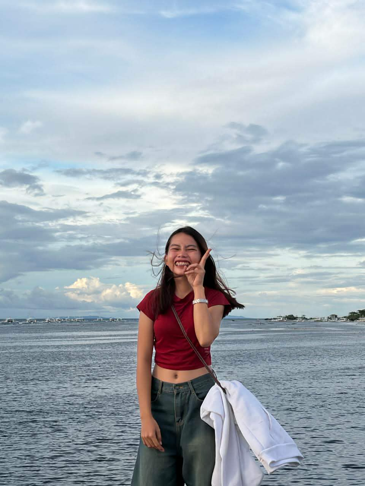

12- Alcaraz
Tayud , Consolacion, Cebu
09939238276
marielandriano084@gmail.com
September 7,2009
Bug-ot,Argao,Cebu
Argao National High school
Informatics college
My expectation on this school year in the britech college is i learn all subject that i go to the college because i learn also the programming in my strand to this year 2026-2027 and i learn the responsble in this school in the britech college . That i improve my skills before i go to college and that the britech college very nice teaching and more happening in this school years because th last year is not happening and i don't understand to the last school year because the teaching is i don't understand on any subject . And that this school year is more friends and the britech college is very nice because the protocol on the principals don 't go out side and many protocol to the principals and teacher . And that my grade is higher than to the last school year lastly very thank full this school , bcause i go thier in britech college.
Watch movie
Play cod
Cleaning in house
Sleepy
coding
eating
sleepy
study